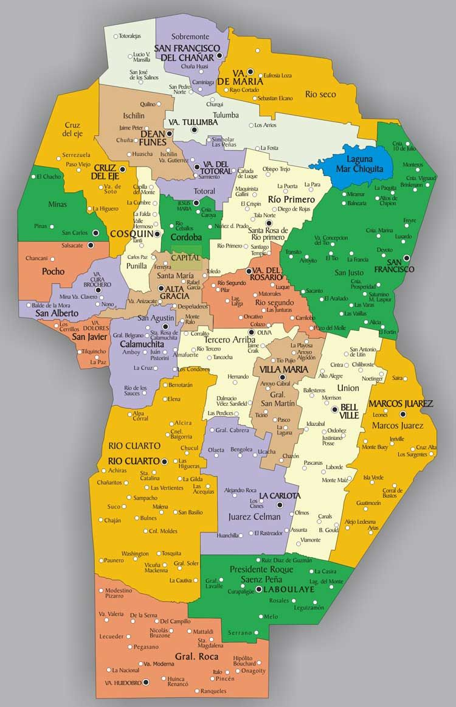
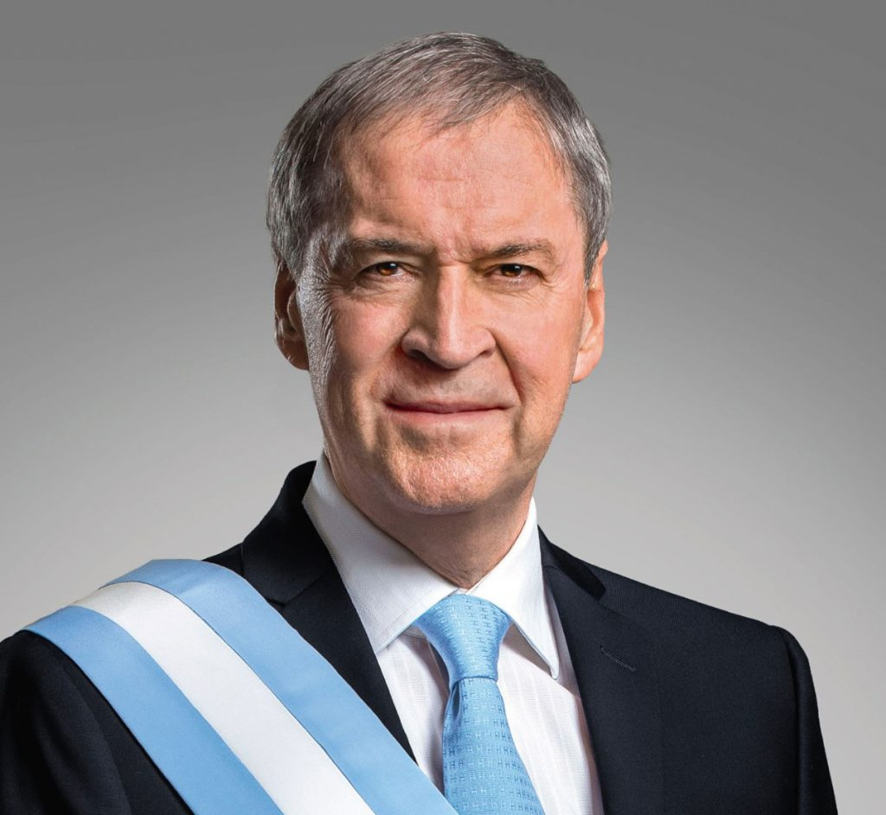

<div class="container">

<section>
    <article>
        <h2>Córdoba</h2>
    </article>
    <article>
        <a name="historia"><h2>La historia de nuestra provincia</h2></a>
        
        <p>
            La Provincia de Córdoba cuenta con muchos legados y huellas marcadas por otras epocas, por lo que, antes de 
            mostrar los lugares turisticos mas importantes, vamos a contar un poco de nuestra historia.
        </p>
        <p>
            Diego de Rojas fue, en 1543, el primer español que exploró el área de las sierras de Córdoba.
            Partió de Cuzco con un contingente de 300 hombres, con la misión de descubrir una provincia entre Chile y 
            el Río de la Plata, enfrentando una feroz resistencia de los comechingones en su camino. 
            Rojas murió por el ataque de una flecha, y la expedición regresó, ya diezmada, bajo el mando de Francisco de Mendoza.
        </p>
    </article>
    <article>
        <h2>Localización</h2>
        <p>
            Córdoba es una de las 23 provincias que componen la República Argentina. 
            Se halla ubicada la región central del país, en donde forma parte de la región pampeana. 
            Limita al sur con la provincia de La Pampa, al sureste con la provincia de Buenos Aires, 
            al este con la Provincia de Santa Fe, al norte con la Provincia de Santiago del Estero, 
            al noroeste con provincia de Catamarca y al este con las provincias de La Rioja y San Luis.
            La capital provincial es homónima. 
        </p>
        
    </article>
    <article>
        <h2>Gobernador</h2>
        <h3>Juan Schiaretti</h3>
        
        <p>Gobernador de la provincia de Córdoba desde el 10 de diciembre de 2019 -en su tercer periodo- 
            y con mandato hasta diciembre de 2023.
        </p>
        <p>
            Contador público egresado de Universidad Nacional de Córdoba y presidente del Partido Justicialista de Córdoba.
        </p>
        <p>
            Fue gobernador por primera vez entre los años 2007 y 2011 y reelecto para el periodo 2015-2019. 
            También fue vicegobernador bajo el mandato de José Manuel de la Sota, entre 2003 y 2007.
        </p>
        <p>
            A lo largo de su trayectoria, fue diputado en el Congreso nacional, secretario de Industria y Comercio 
            de la Nación y ministro en distintos periodos provinciales.
            Como contador profesional, se desempeñó en importantes empresas relacionadas con la construcción y la automoción.
        </p>
        <p>
            Falleció en un accidente automovilístico sobre la Ruta Nacional 36, después de que la camioneta 
            en la que se trasladaba embistiera a un camión en su parte trasera.
        </p>
    </article>
</section>
</div>
